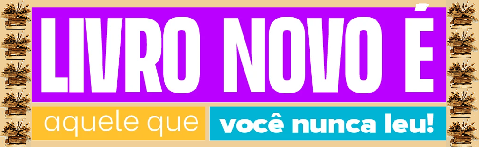

Bem-vindo ao Sebo Página Virada
Nosso sebo é um espaço para amantes de livros, histórias e conhecimento. Aqui, cada página tem uma nova chance de ser virada.
Destaques da Semana
- O Pequeno Príncipe – R$ 10,00
- Dom Casmurro – R$ 8,00
- 1984 – R$ 12,00
Novidades Recentes
Todo dia é dia de descoberta por aqui! Confira os títulos que acabaram de chegar nas nossas estantes — quem sabe seu próximo favorito não está entre eles?
Chegaram por aqui:- "Grande Sertão: Veredas" – João Guimarães Rosa (edição especial de colecionador);
- "O Conto da Aia" – Margaret Atwood (quase novo!);
- "1984" – George Orwell (edição bilíngue);
- Coleção Vagalume – clássicos da infância e juventude, em ótimo estado;
- HQs da Marvel e DC – raridades pra quem ama quadrinhos!
- Livros de autoajuda e desenvolvimento pessoal;
- Romances históricos e best-sellers;
- Obras de filosofia e sociologia;
- Obras de filosofia e sociologia;
- Apostilas e livros técnicos.
[Delis] Galeria de imagens aqui